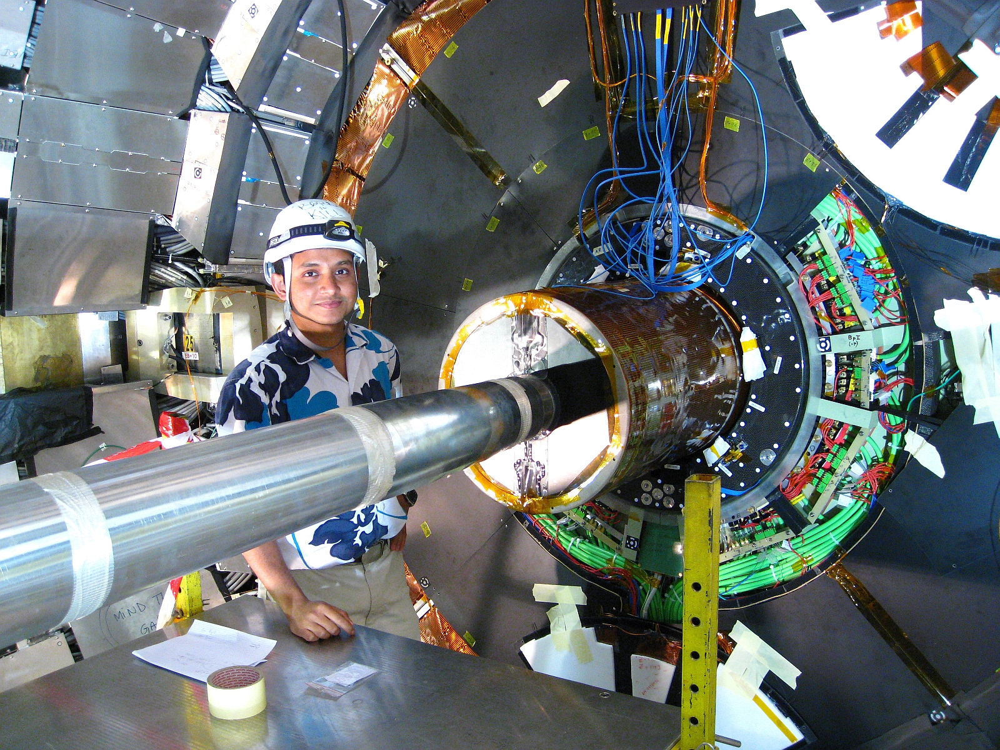

|

Commissioning the CMS Inner Tracker at the LHC in 2008 |
EducationM.S., Ph.D. Experimental High Energy Physics. Cornell University. 2011Dissertation: Observation of the Dalitz Decay of the First Excited State of the Charmed-Strange Meson Advisor: Prof. Anders Ryd Experiment: CLEO-c Current positionEngineering Physicist (Permanent staff and P.I.)Purdue University, Department of Physics and Astronomy 525 Northwestern Avenue, PHYS 344 West Lafayette, IN 47907 Contactsouvik.das@cern.ch+1-765-494-5518 |
I am interested in experimentally accessible explanations for how the world works. Professionally, I conduct research in high energy physics to investigate the subatomic, elementary structures of reality that underlie our everyday experiences of matter, energy, space and time. I am also passionate about teaching physics.
I have worked on the Compact Muon Solenoid (CMS) experiment at the CERN Large Hadron Collider (LHC) since 2006. I have also worked on the CLEO-c experiment at the Cornell Electron Storage Ring. My contributions to detector instrumentation and analyses at CMS led up to the discovery of the Higgs boson in 2012. I am also responsible for the prediction and first observation of three-body electromagnetic decays of mesons containing charm quarks at CLEO-c. Please follow the links on the left to explore my interests in High Energy Physics, Quantum Computing, Artificial Intelligence, Physics Outreach, and the commercialization of bleeding-edge research by forming Companies. I also enjoy a wide spectrum of Sports and Hobbies.